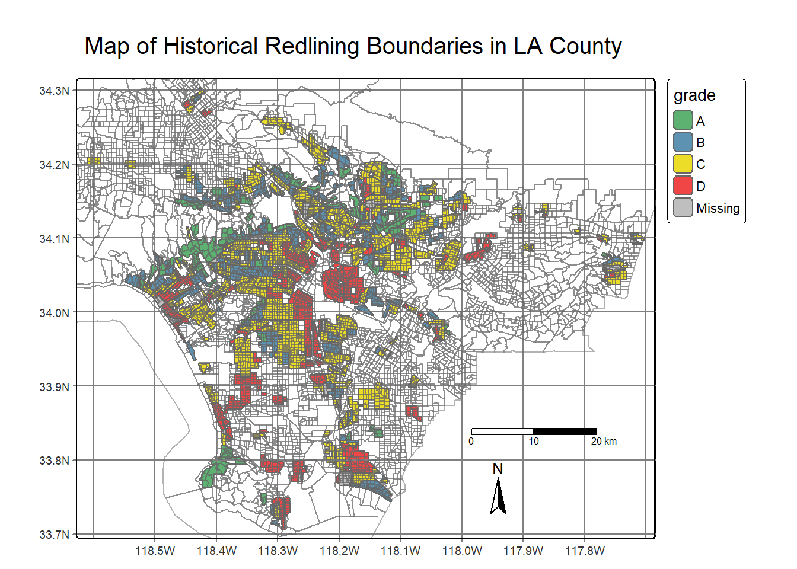
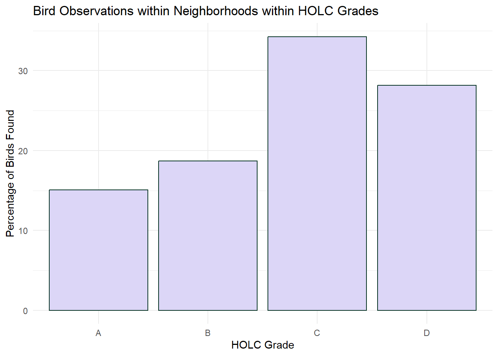

Code
library(tmap)
library(tidyverse)
library(sf)
library(spData)
library(here)
library(dplyr)
library(sp)
library(gt)This blog post aims to highlight the lasting effects of zoning, particularly in Los Angeles. The incorporation of HOLC (Homeowners Loan Corporation Act) has led to long lasting and detrimental effects in which economic security of minority communities was no longer deemed a possibility. The Federal Home Loan Bank Board (FHLBB) set standards in place to which neighborhood demographics (i.e percent of minority population) was deemed a factor in loan eligibility. Following the stock market crash and Great Depression, countless banks across the country began to close. According to the Urban History Association, “as banks failed by the thousands, freezing credit markets and increasing unemployment, foreclosures skyrocketed and threatened to destroy the national housing industry” (Woods 2012). In order to remediate mass daily foreclosures, Congress then put in place the Home Owners’ Loan Corporation (HOLC) in order to help desperate homeowners. However, HOLC associated unsuitable candidates for a loan with their ethnic backgrounds, leaving many minority communities behind in moving forward from economic despair.
Current ongoing cases of environmental injustices/racism are arguably consequences of prejudiced enforcement of the past. America’s long history of racial segregation still has left its mark in Los Angeles. HOLC and their ranking systems were used to determine whether a certain neighborhood or region is suitable for a loan. Their ranking system, (A (green), B (blue), C (yellow), D (red)) was then used to block access to loans for home ownership, which is currently known as ‘redlining’. However, redlined communities tend to have less greenery and are typically hotter than other neighborhoods/communities.
In this project, I aim to investigate whether or not redlined communities in Los Angeles have higher rates of pollution burden, have less reports of bird sightings as an indication of biodiversity.
To obtain demographic and environmental data by census tract in Los Angeles, we will be using data from the EPA’s Environmental Justice Screening and Mapping Tool.
For HOLC grade designations in Los Angeles, we will be using a GeoJSON file from the Digital Scholars Lab containing redlining information.
Lastly ,for biodiversity data represented by bird sightings, we will use data from the Global Biodiversity Information Facility.
Since the data was too big to upload, I uploaded them into a zip folder which can be accessed here.
Loading necessary packages and data
library(tmap)
library(tidyverse)
library(sf)
library(spData)
library(here)
library(dplyr)
library(sp)
library(gt)Reading in EJScreen data and filter to Los Angeles County using st_read()
Reading layer `EJSCREEN_StatePctiles_with_AS_CNMI_GU_VI' from data source
`C:\Users\maria\Documents\git\mariamkg00.github.io\blog\geospatial-analysis-of-HOLC-in-LA\data\EJSCREEN_2023_BG_StatePct_with_AS_CNMI_GU_VI.gdb'
using driver `OpenFileGDB'
Simple feature collection with 243021 features and 223 fields
Geometry type: MULTIPOLYGON
Dimension: XY
Bounding box: xmin: -19951910 ymin: -1617130 xmax: 16259830 ymax: 11554350
Projected CRS: WGS 84 / Pseudo-MercatorIn order to visualize waste water discharge by census block groups, I will use tmap() in order to help identify which census block groups are above the 95th percentile of waste water discharge while adding a centroid using st_centroid()
# making centroids using st_centroid()
la_ejscreen_centroids <- st_centroid(la_county) %>%
filter(P_PWDIS > 95)
#using tmap to plot
tm_shape(la_county)+
tm_fill(fill = 'PWDIS', palette = 'Purples',
title = 'Wastewater Discharge')+
tm_shape(la_ejscreen_centroids)+
tm_dots(fill = 'red')+
tm_graticules()+
tm_compass()+
tm_layout(main.title = 'Map of Wastewater Discharge by Census Block Groups in LA County') +
tm_scale_bar(position = c("LEFT","BOTTOM"))
In order to find census block groups with less than 5% of the population is considered low income, we will use dplyr’s filter() function to specify the parameters.
low_income_lac <- la_county %>%
filter(LOWINCPCT < .05)
#Calculating percentages based on the number of rows in each new subset.
print(nrow(low_income_lac)/nrow(la_county)* 100)[1] 6.114398Of the total census block groups in Los Angeles County, only 6.11% of census block groups have less than a 5% low income population.
In order to find percent of census block groups that are above the 80th percentile for PM 2.5 AND above the 80th percentile for Superfund proximity, we will use the filter() function.
eighty_percentile_pm_sf <- la_county %>%
filter(P_PM25 > 80 & P_PNPL > 80) %>%
drop_na()
print(nrow(eighty_percentile_pm_sf)/nrow(la_county) * 100)[1] 17.03839Approximately 17.03% of census block groups in LA County are above the 80th percentile for Particulate Matter AND for Superfund proximity.
I will use the st_read() function along with st_make_valid() in order to incorporate valid geometries.
LA_redlining <- st_read("https://dsl.richmond.edu/panorama/redlining/static/citiesData/CALosAngeles1939/geojson.json") %>%
st_make_valid()Reading layer `geojson' from data source
`https://dsl.richmond.edu/panorama/redlining/static/citiesData/CALosAngeles1939/geojson.json'
using driver `GeoJSON'
Simple feature collection with 417 features and 14 fields
Geometry type: MULTIPOLYGON
Dimension: XY
Bounding box: xmin: -118.6104 ymin: 33.70563 xmax: -117.7028 ymax: 34.30388
Geodetic CRS: WGS 84In order to make a map of historical redlining boundaries colored by HOLC grade, I will use tm_shape() along with making an associated color palette to distinguish different HOLC grades.
# making appropriate color palette for HOLC ranking system
holc_grades <- c('#5DB271','#5D92B2','#ECDD29','#F14646')
tm_shape(LA_redlining)+
tm_polygons(fill = 'grade', palette = holc_grades)+
tm_scale_bar()+
tm_compass()+
tm_graticules()+
tm_layout(main.title = 'Map of Historical Redlining Boundaries in LA County')+
tm_shape(la_county)+
tm_borders(col_alpha = 0.5)
In order to find the number of census block groups that fall within areas with HOLC grades, I will use st_within(). The reason it is best to use st_within() is to
But first, I need to change the CRS of the Los Angeles EJ screen data.
la_county <- st_transform(la_county, crs = st_crs(LA_redlining))
holc_groups_la <- st_join(la_county, LA_redlining, join = st_within, left = FALSE)
print(nrow(holc_groups_la))[1] 920There are 920 census block groups that fall within areas with assigned HOLC grades in Los Angeles County.
In order to summarize current conditions based on EJScreen data within historical redlining categories, I will use gt() to generate a table with the mean of variables of interest that include:
= % low income,
- percentile for particulate Matter 2.5,
- percentile for low life expectancy, and
- percentile for air toxics cancer risk.
summary_holc <- holc_groups_la %>%
group_by(grade) %>%
summarize(avg_pct_low_inc = mean(LOWINCPCT, na.rm = TRUE),
avg_pctl_pm = mean(P_PM25, na.rm = TRUE),
avg_pctl_life_exp =mean(P_LIFEEXPPCT, na.rm = TRUE),
avg_pctl_air = mean(P_CANCER,na.rm = TRUE)) %>%
na.omit() %>%
st_drop_geometry()
gt(summary_holc)| grade | avg_pct_low_inc | avg_pctl_pm | avg_pctl_life_exp | avg_pctl_air |
|---|---|---|---|---|
| A | 0.1781644 | 67.93333 | 22.60000 | 29.66667 |
| B | 0.2805268 | 78.92208 | 43.37838 | 47.49351 |
| C | 0.4104716 | 81.33595 | 58.58299 | 56.84676 |
| D | 0.4388055 | 82.80488 | 59.27957 | 64.01742 |
Discussion
As the HOLC grade goes from A to D, I noticed that the average percentage of low income residents in the given area increases. It could also be noted that the census block groups within HOLC grade D have the highest average percentile with particulate matter. The historic background behind HOLC grading can also help explain why certain neighborhoods are low income, only because low income neighborhoods were perceived as risky to grant home ownership loans. The effects of a previously graded neighborhood still lingers, as much of the higher amounts of pollution burden and lower socioeconomic statuses lie within HOLC Grade D.
We will only be looking at bird observation data from the year 2022, and we will calculate the percentage of bird observations within each redlining category.
First, I am reading in the data with st_read() function. Then I will use st_join() in order to spatially join the two datas ets.
#reading in the bird data and filtering for the year 2022
bird_data <- st_read(('data/gbif-birds-LA')) %>%
filter(year == '2022')Reading layer `gbif-birds-LA' from data source
`C:\Users\maria\Documents\git\mariamkg00.github.io\blog\geospatial-analysis-of-HOLC-in-LA\data\gbif-birds-LA'
using driver `ESRI Shapefile'
Simple feature collection with 1288865 features and 1 field
Geometry type: POINT
Dimension: XY
Bounding box: xmin: -118.6099 ymin: 33.70563 xmax: -117.7028 ymax: 34.30385
Geodetic CRS: WGS 84birds_in_holc <- st_join(bird_data, LA_redlining, join = st_intersects, left = FALSE)
summary_birds_holc <- birds_in_holc %>%
group_by(grade) %>%
summarize(count = n()) %>%
mutate(percentage = (count/sum(count)) *100) %>%
st_drop_geometry() %>%
na.omit()
gt(summary_birds_holc)| grade | count | percentage |
|---|---|---|
| A | 1073 | 15.07446 |
| B | 1329 | 18.67097 |
| C | 2439 | 34.26524 |
| D | 2004 | 28.15398 |
Plotting the results of bird observations within each HOLC grade using ggplot()
ggplot(data = summary_birds_holc, aes(x = grade, y = percentage))+
geom_bar(stat = 'identity', fill = '#DCD6F7', col = '#023020')+
theme_minimal()+
labs(x = 'HOLC Grade', y = 'Percentage of Birds Found', title = 'Bird Observations within Neighborhoods within HOLC Grades')
I did find it interesting that HOLC grade C had the most observations of birds in this particular area, only because I hypothesized that groups A and/or B would have more bird sightings. My initial thought process could be explained by the fact that these two areas , on average, have lower percentages of lower income residents. In turn, I assumed that this would equate to more levels of government funding and higher areas of green spaces.
In summary, the results found in this project were astoundingly surprising as the effects of redlining still remain and hurt communities in Los Angeles. Although the HOLC grading system dealt with loan eligibility, the snowball effect of rejecting loans and financial security to minorities who were deemed untrustworthy has led to generational harm and life-altering effects.
Woods, L. L. (2012). The Federal Home Loan Bank Board, Redlining, and the National Proliferation of Racial Lending Discrimination, 1921–1950. Journal of Urban History, 38(6), 1036-1059. https://doi.org/10.1177/0096144211435126
For more detailed information about my coding process, please see my Github link.
@online{garcia2023,
author = {Garcia, Mariam},
title = {Historical {Redlining} and Its {Impact} on {Commmunities} in
{LA}},
date = {2023-12-12},
url = {https://mariamkg00.github.io/blog/geospatial-analysis-of-HOLC-in-LA/},
langid = {en}
}